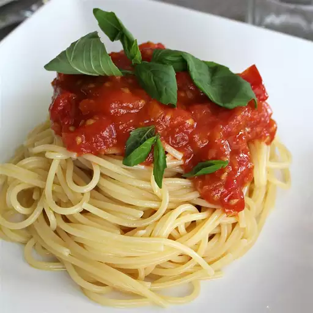

Spaghetti Nonna

Description
This is a classic Italian recipe by some Italina grandma. It's very delicioso.
Ingredients
- Spaghetti no. 12
- Tomato
- Onion
- Garlic
- Basil
- Salt & Pepper
Steps
- Chop tomato, onion, and garlic.
- Throw it all into a saucepan with salt & pepper and extra virgin olive oil.
- Heat up the pan and stir until mushy.
- Add some water and keep stirring.
- Add a few basil leaves.
- Cook the spaghetti then serve it with the sauce on top.
- Buon appetito!
Back to all recipes